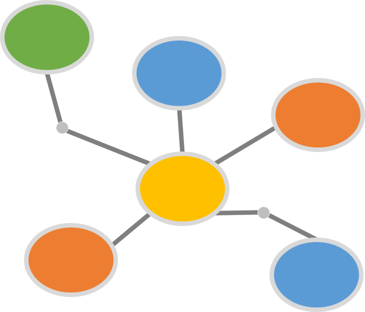

Easy adoption
and operation
Rich set of PM
templates
Loaded with
best practices
The
Critical
Path
Laser focus
on benefits
achievement
Full suite of
collaboration
tools
- Full business case functionality
- Benefits Traceability Matrix automatically generated
- Benefits realization stage added to all projects
- Real-time tracking of benefits to ensure continuous project portfolio alignment
- SaaS cloud app deploys in under 1 minute for an entire organization
- Bulletproof security in all aspects
- 99.9% availability
- Data redundancy via parallel cloud failover
- Intuitive and simple interface
- Does not require IT support
- Monthly subscription model – and pay only for licenses in use
- Inspired by and compliant with PMBOK, Prince2, Agile, ITIL, COBIT, TOGAF, SDLC, and many others
- Tailors terminology, process, reports and deliverables dynamically to your chosen project delivery methodology
- Offers a new (optional) world-class PM methodology called ProjX.
- Fully configurable to easily scale and adapt to the needs of each project
- Comprehensive and unparalleled set of planning and delivery templates
- Error-proof and fully linked with logic
- Forms rendered based on view and edit rights, at the field level
- Automated building of outputs, like reports
- End-to-end workflows and approvals
- Embedded processes based on leading practice and standards
- Maintains detailed history for real-time audits and reviews
- Seamlessly collaborate with any number of companies
- Share only what you want, and restrict the rest to your team
- Complete communications centre with messaging, chat, action items and notifications
- Tailored reporting so that specific stakeholders receive custom reports
- Master calendar for the project that can sync as iCal
- A SaaS, cloud-based app developed by ProJacked to elevate the practice of change to a science, yet facilitate project artistry
- Offers project delivery software that is fully compliant with Prince2, PMBOK and Agile, and also offers a composite methodology (ProjX) to bring together and augment the best concepts of each
- Will absolutely be the best PM app you have ever used, and not just because no other app offers cohesive and automated delivery templates
- Adapts to real project needs for scalability, confidentiality, collaboration and agility without sacrificing rigour, quality and management